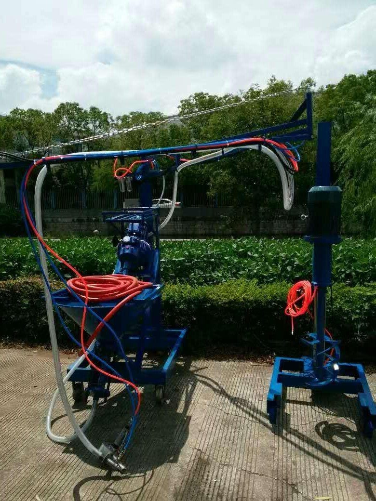

Sản xuất GRC bằng máy phun: quy trình 7 bước từ cấp phối đến tháo khuôn
Phun máy cho tấm GRC mỏng, nhẹ mà vẫn đạt cường độ uốn cao – nhưng chỉ khi từng bước được làm đúng: cấp phối, hiệu chỉnh tỷ lệ sợi, độ dày từng lớp phun, lèn và bảo dưỡng. Đây là quy trình chuẩn kèm các con số cần nhớ.

GRC (Glass-fibre Reinforced Concrete), còn gọi là GFRC, là vữa xi măng – cát mịn được gia cường bằng sợi thủy tinh kháng kiềm (AR). Nhờ sợi, một tấm GRC dày chỉ khoảng 10–15 mm vẫn chịu uốn tốt, nên được dùng nhiều cho tấm ốp mặt dựng, phào chỉ, cột, lam, chậu cây và các cấu kiện kiến trúc có hình dáng phức tạp.
Có hai cách sản xuất chính: đổ khuôn hỗn hợp trộn sẵn sợi (premix) và phun máy (spray-up). Phương pháp phun đưa vữa và sợi cắt ngắn lên khuôn cùng lúc, cho hàm lượng sợi cao hơn và sợi phân bố theo mặt phẳng tấm – vì vậy cường độ uốn thường cao hơn rõ rệt. Bài này đi qua quy trình phun máy theo đúng thứ tự một xưởng cần làm.
Thiết bị và dụng cụ cần chuẩn bị
- Máy phun GRC: gồm phễu chứa vữa, bơm trục vít, tủ điện, tay cần và súng phun có bộ cắt sợi. Súng phun quyết định phần lớn chất lượng sản phẩm.
- Máy trộn tốc độ cao: vữa GRC thường dùng xi măng đông kết nhanh, cần trộn đồng nhất trong khoảng 30–60 giây.
- Máy nén khí: cấp khí cho súng phun, mô-tơ cắt sợi và bộ rung phễu – lưu lượng phải đủ theo khuyến cáo của nhà sản xuất máy.
- Hai cân: loại 50 kg (sai số khoảng ±50 g) để cân vữa, loại 500 g (sai số ±1 g) để thử tỷ lệ sợi.
- Con lăn lò xo các cỡ và bay: GRC không đầm rung được, việc lèn chặt hoàn toàn bằng con lăn.
Bước 1 – Thiết kế cấp phối
Cấp phối được chọn theo cường độ uốn yêu cầu của sản phẩm. Bảng dưới là một cấp phối tham chiếu phổ biến (tính theo khối lượng, xi măng = 100 phần):
| Thành phần | Tỷ lệ (phần khối lượng) |
|---|---|
| Xi măng | 100 |
| Cát thạch anh (cát mịn, sạch, khô) | 100 – 120 |
| Nhũ tương acrylic (dạng lỏng đậm đặc) | 8 – 12 |
| Phụ gia giảm nước gốc polycarboxylate | 0,6 – 1,2 |
| Nước trộn | 18 – 24 |
| Sợi thủy tinh kháng kiềm (ZrO₂ > 16%, dài 12 – 18 mm) | 4 – 5% khối lượng sản phẩm |
Bước 2 – Chuẩn bị khuôn
Khuôn có thể làm bằng gỗ, thép, GRC, composite FRP hoặc silicone. Yêu cầu chung: kích thước chính xác, đủ cứng để không biến dạng khi lăn lèn. Bề mặt khuôn phải sạch, phủ chất chống dính đều tay; kiểm tra lại vị trí các chi tiết chôn sẵn (bản mã, neo liên kết) trước khi phun.
Bước 3 – Kiểm tra thiết bị trước ca
- Kiểm tra lưỡi cắt sợi trong súng: khe hở giữa lưỡi và vành cắt khoảng 1,0 – 1,1 mm. Lắp sai gây gãy lưỡi và phải dừng sản xuất.
- Kiểm tra áp suất máy nén khí theo khuyến cáo của nhà sản xuất máy phun.
- Chuẩn bị sẵn phụ tùng hao mòn (lưỡi cắt, con lăn cao su, đầu phun) và dụng cụ thử nghiệm tại chỗ.
- Không chạy bơm trục vít khô: trước khi khởi động, đổ một ít nước hoặc chất lỏng loãng vào phễu để bôi trơn stator cao su. Chạy khô vài giây cũng có thể làm cháy stator.
Bước 4 – Cân và trộn vữa
Cát hiếm khi khô tuyệt đối. Nếu không trừ lượng nước có sẵn trong cát, tỷ lệ nước/xi măng thực tế sẽ cao hơn thiết kế – vữa loãng hơn, cường độ thấp hơn và dễ co ngót, nứt. Hãy đo độ ẩm cát trước mỗi mẻ rồi hiệu chỉnh:
- Khối lượng cát ẩm cần cân: X = Xs ÷ (1 − A%)
- Lượng nước thực tế cần thêm: W = Ws − X × A%
Trong đó Xs là khối lượng cát khô theo cấp phối, A% là độ ẩm cát, Ws là lượng nước theo cấp phối. Ví dụ: cấp phối cần 100 kg cát khô và 22 kg nước, cát đang ẩm 2% → cân X ≈ 102,0 kg cát ẩm và chỉ thêm W ≈ 22 − 2,04 ≈ 20,0 kg nước.
Dùng cát khô công nghiệp (độ ẩm dưới 0,5%) giúp bước này đơn giản và ổn định hơn rất nhiều. Trộn đúng thứ tự cho vật liệu vào để vữa đồng nhất, không vón cục; sàng vữa trước khi đổ vào phễu máy.
Bước 5 – Hiệu chỉnh máy: thử túi và thử xô
Đây là bước quyết định hàm lượng sợi – yếu tố số một của cường độ GRC phun. Mục tiêu thường là 4 – 5% sợi theo khối lượng sản phẩm.
Thử túi (lưu lượng sợi):
- Cân túi rỗng (W, gam).
- Phun sợi đã cắt vào túi trong đúng 15 giây.
- Cân túi có sợi (G, gam).
- Lưu lượng sợi = (G − W) × 4, đơn vị gam/phút. Điều chỉnh áp suất khí của mô-tơ cắt sợi cho đến khi đạt giá trị mục tiêu.
Thử xô (lưu lượng vữa):
- Cân xô rỗng (W, kg).
- Phun vữa vào xô trong đúng 30 giây.
- Cân xô có vữa (S, kg).
- Lưu lượng vữa = (S − W) × 2, đơn vị kg/phút. Điều chỉnh tốc độ bơm cho đến khi đạt mục tiêu.
Quan hệ giữa hai lưu lượng: vữa = sợi × (1 − a) ÷ a, với a là tỷ lệ sợi mục tiêu. Ví dụ: muốn a = 5% và máy đang cắt 300 g sợi/phút → lưu lượng vữa cần là 300 × 0,95 ÷ 0,05 = 5.700 g, tức khoảng 5,7 kg vữa/phút.
Bước 6 – Phun và lèn
- Lớp mặt (không sợi): phun một lớp vữa mỏng không có sợi để sợi không lộ ra bề mặt – khoảng 1 mm với vữa thường, 2 mm với vữa màu. Lớp này dày hơn mức đó rất dễ nứt chân chim.
- Các lớp có sợi: mỗi lớp dày 3 – 4 mm, lăn lèn ngay sau khi phun để đuổi bọt khí và ép sợi vào vữa.
- Đường phun: phun theo hình chữ S so le, hai dải phun liền kề chồng lên nhau 50% bề rộng dải.
- Tư thế súng: đầu súng vuông góc với mặt khuôn, cách khoảng 300 – 400 mm. Phun góc và cạnh trước, mặt phẳng lớn sau; phun phần thấp trước, phần cao sau.
- Góc cạnh: góc trong không dùng con lăn mà dùng thép góc hoặc cọ để ép; góc ngoài không có thành khuôn thì giữ vữa bằng bay rồi mới lăn. Khi lăn sát thành khuôn, chừa khe nhỏ để không kéo xô lớp vữa đã phun.
Bước 7 – Tháo khuôn và bảo dưỡng
- Phủ ngay màng nilon lên cấu kiện vừa phun để nước không bốc hơi nhanh – đây là lúc GRC dễ nứt nhất.
- Chỉ tháo khuôn khi cường độ uốn đạt khoảng 2 MPa trở lên (đúc mẫu đi kèm để kiểm tra).
- Sau tháo khuôn, tiếp tục bảo dưỡng ẩm liên tục khoảng 7 ngày trong môi trường độ ẩm tương đối từ 95% trở lên.
Sau ca làm việc: vệ sinh máy
Ngừng cấp vữa, phun hết vữa còn trong ống, sau đó cấp nước sạch và tiếp tục phun để súc rửa bơm và ống dẫn. Vệ sinh kỹ súng phun, đáy phễu và các khớp nối nhanh. Vữa đông kết nhanh bám lại trong bơm là nguyên nhân hàng đầu làm giảm tuổi thọ stator/rotor và gây tắc ống ở ca sau.
Tóm tắt các con số cần nhớ
| Hạng mục | Giá trị tham chiếu |
|---|---|
| Hàm lượng sợi AR | 4 – 5% khối lượng |
| Chiều dài sợi cắt | 12 – 18 mm (thường dùng) |
| Lớp mặt không sợi | 1 mm (vữa thường) / 2 mm (vữa màu) |
| Mỗi lớp phun có sợi | 3 – 4 mm, lăn lèn ngay |
| Khoảng cách súng – khuôn | 300 – 400 mm, vuông góc |
| Chồng dải phun | 50% |
| Tháo khuôn | khi cường độ uốn ≥ 2 MPa |
| Bảo dưỡng ẩm | 7 ngày, độ ẩm ≥ 95% |
Nguồn tham khảo
- Tài liệu hướng dẫn vận hành máy phun GRC trục vít và quy trình sản xuất GRC của nhà sản xuất thiết bị (2026)
- PCI MNL-130 – Manual for Quality Control for Plants and Production of Glass Fiber Reinforced Concrete Products
- EN 1169 – Precast concrete products: General rules for factory production control of glass-fibre reinforced cement
- JC/T 940 – Sản phẩm trang trí GRC (tiêu chuẩn ngành vật liệu xây dựng Trung Quốc)